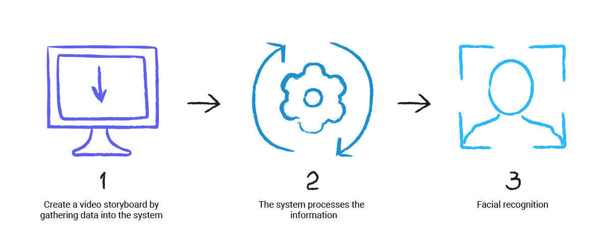

Штучний інтелект
Система розпізнавання облич
Штучний інтелект
Шту́чний інтеле́кт (англ. Artificial intelligence, AI) — розділ комп'ютерної лінгвістики та інформатики, що опікується формалізацією проблем та завдань, які подібні до дій, що виконує людина
Система розпізнавання обличчя
Система розпізнавання облич — це технологія, здатна ідентифікувати або перевірити особу на цифровому зображенні або відеокадрі. Існує багато методів, які використовуються в системах розпізнавання осіб, але в цілому вони ґрунтуються на порівнянні рис обличчя заданого зображенням з обличчями, які зберігаються в базі даних. Він також описується як біометричний додаток на основі штучного інтелекту, який може однозначно ідентифікувати людину шляхом аналізу моделей на основі текстур обличчя та форми людини Сьогодні важливу роль у процесі розпізнавання обличчя людини відіграють сучасні технології: соціальні мережі, телебачення та інші способи зв'язку. Прогрес в області штучного інтелекту і біометричних технологій, включаючи розвиток можливостей машинного навчання, призвів до підвищення точності та доступності комп'ютеризованих технологій розпізнавання облич і до їх ширшого розповсюдження. Тепер розпізнавання обличчя може відбуватися в великих масштабах і в більш складних умовах.
Розвиток технологій розпізнавання
Розпізнавання облич має довгу історію, початок якої можна віднести до ХІХ століття. Щоб знайти злочинців, наприклад, таких жорстоких бандитів як Джессі Вудсон Джеймс або Біллі Кід, органи правопорядку Америки розвішували оголошення з написом «розшукується живим або мертвим», які обіцяли нагороди тим, хто допоможе знайти і заарештувати злочинців. На додаток до обіцянок щедрої нагороди, оголошення містили фотографії та короткий опис злочинів. Оголошення поширювали серед органів правопорядку по всій країні і розвішували у кожному поштовому відділенні з метою затримати злочинців якомога швидше. У 1960-і роки виникли перші комп'ютеризовані системи розпізнавання облич. Вудро Вілсон (Вудді) Бледсоу першим розробив спосіб класифікації облич із використанням ліній сітки. Однак, метод Бледсоу досі вимагав людської участі, тому що людина вручну відмічала особливі характеристики обличчя на фотографії людини і вводила цю інформацію в комп'ютер. Технологія дозволяла перевірити до 40 облич на годину (перевірка відповідності кожного обличчя займала приблизно 90 секунд), що на той час вважалося вражаючим результатом. До кінця 1960-х років розпізнавання облич отримало подальший розвиток в Стенфордському науково-дослідному інституті. Виявилася, що з точки зору точності розпізнавання технологія справляється краще людей (люди, як відомо, погано розпізнають людей, яких вони не знають). До кінця століття найефективніше рішення було створено німцями в Рурському університеті в Бохумі. Точність нової технології була настільки високою, що її придбали для банківської галузі і сфери обслуговування повітряних перевезень. З цього моменту ринок технологій розпізнавання облич почав стрімко розвиватися. При цьому - відповідно до проведеного урядом США оцінювання - з 1993 по 2010 рік частота помилок автоматичних систем розпізнавання облич знизилася в 272 рази.
Принцип дії
Модуль розпізнавання облич працює з камерою і детектором облич «Інтелекту». На першому кроці роботи детектор облич визначає появу в кадрі особи і захоплює його зображення. Далі можливі дві схеми роботи модуля розпізнавання обличчя: ідентифікація і верифікація. У режимі ідентифікації захоплене обличчя порівнюється з усіма зображеннями облич, що зберігаються в базі даних. Таким чином з'ясовується, зокрема, наявність людини в базі даних небажаних відвідувачів або VIP-клієнтів будь-якого закладу. У режимі верифікації обличчя людини, що скористався карткою-перепусткою або будь-яким іншим ідентифікатором особистості для проходу через турнікет або двері з електронним замком, порівнюється з фотографією власника пропуску, що зберігається в базі даних. Таким чином можна з'ясувати, чи є людина, яка намагалася отримати доступ, тим, за кого він себе видає. В налаштуваннях модуля задаються значення ступеня подібності (у відсотках), які відповідні кордонам так званих зон схожості. Допускається задання трьох зон: червоної (висока ступінь подібності), жовтої (середня ступінь подібності) і зеленою (низька ступінь подібності). При високому ступені подібності розпізнане обличчя, а також дата, час розпізнавання, номер камери, яка захопила обличчя, і відсоток схожості зберігаються в базі розпізнаних облич. Ступінь подібності візуально відображається на моніторі оператора за допомогою відповідного кольору, що полегшує контроль роботи системи. Крім розпізнавання модуль дозволяє видаляти існуючі записи з бази даних еталонних зображень, з якими проводиться порівняння, або вносити нові записи, що містять зображення та особисті дані людини: ПІБ, відділ, коментар. В якості еталонного зображення може використовуватися як цифрова фотографія, заздалегідь завантажена в базу даних модуля, так і зображення, захоплене камерою системи при проході людини через пост відеоконтролю. Модуль дозволяє перевірити одну фотографію або всі фотографії в базі на відповідність біометричних стандартам для систем автоматичної ідентифікації особистості (ISO 197945).
Функції

- Розпізнавання зображення обличчя, захопленого детектором облич «Інтелекту», шляхом порівняння з фотографіями, що містяться в заздалегідь створеній базі даних. У режимі ідентифікації проводиться порівняння з усіма особами, які є в базі. У режимі верифікації здійснюється порівняння обличчя людини, що намагається скористатися методом автоматичної ідентифікації (проксіміті-карта, біометрична ідентифікація і т.п.) З його фотографією, що зберігається в базі даних. Для порівняння використовується технологія компанії Cognitec.
- Відображення на екрані захоплених облич і супутніх даних: дати і часу захоплення, номера камери, з якої працює модуль.
- Відображення на екрані розпізнаних облич і супутніх даних: номера камери, дати і часу розпізнавання, еталонної фотографії з бази даних, ПІБ, ступеня подібності та коментаря, введеного при додаванні обличчя в базу.
- Друк фотографії та персональних даних розпізнаних особистостей на принтері, збереження зображень розпізнаних облич у форматі bmp або jpeg.
- Перегляд відеофрагменту, відповідного моменту розпізнавання особи.
- Пошук і відображення на екрані всіх розпізнаних за певний часовий інтервал облич. Пошук ведеться по ПІБ та номеру камери з фільтрацією по мірі схожості.Пошук особистості в базі даних по фотографії.
- Додавання в базу даних облич нових записів, що містять цифрову фотографію, персональні дані людини і коментар.
- Відображення на екрані статистики розпізнавання: загальна кількість кадрів, захоплених детектором облич, кількість кадрів, на яких алгоритмом розпізнавання обличчя виявлено особу, кількість кадрів, на яких виявлені очі, і кількість розпізнаних облич.
Методи захвату обличчя
Етапи роботи

Етап - завантаження даних в систему. Записуємо півхвилинне відео з обличчям людини в різних ракурсах із різною мімікою. Завантажуємо відео в систему і додаємо інформацію про людину (ім'я, прізвище, паспортні дані та ін.). На відео потрібно повернути голову на всі боки і зобразити декілька емоцій. Чим різноманітнішим буде отриманий матеріал - тим точнішим буде розпізнання цієї людини на практиці.
Етап - обробка інформації системою. На підставі розкадрування цього відео, робляться зліпки всіх унікальних міток особи (в зоні рота, носа, брів і підборіддя). Разом ці мітки формують масив даних, що відповідає конкретній особистості.
Етап - розпізнавання особи. У роботі система зчитує маркери кожної особи, яка потрапила в камеру, і звіряє з наявними в її пам'яті. У разі збігу система впізнає людину, зазвичай це займає пару секунд.